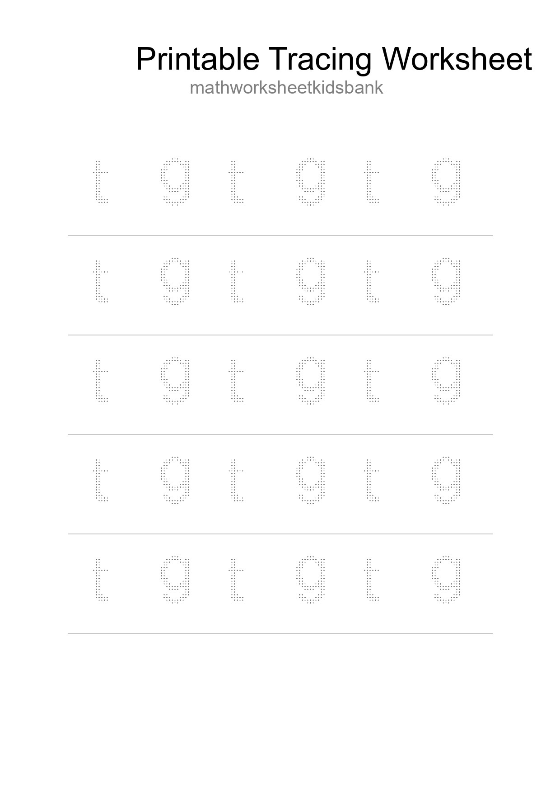
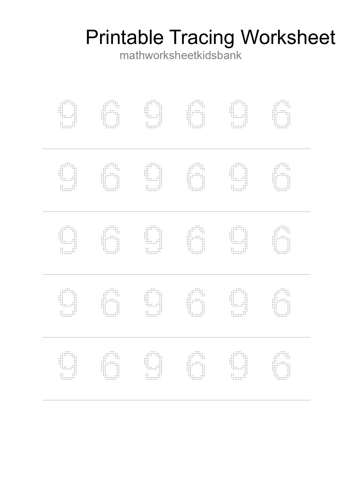

Printable Tracing Worksheet For Kids - Part 11

Printable Tracing Worksheet For Kids - Part 23

Printable Tracing Worksheet For Kids - Part 35

Printable Tracing Worksheet For Kids - Part 47

Printable Tracing Worksheet For Kids - Part 59

Printable Tracing Worksheet For Kids - Part 71

Printable Tracing Worksheet For Kids - Part 83

Printable Tracing Worksheet For Kids - Part 95

Printable Tracing Worksheet For Kids - Part 107

Printable Tracing Worksheet For Kids - Part 119

Printable Tracing Worksheet For Kids - Part 131

Printable Tracing Worksheet For Kids - Part 143
Printable Tracing Worksheet For Kids - Part 155

Printable Tracing Worksheet For Kids - Part 167
Printable Tracing Worksheet For Kids - Part 179
